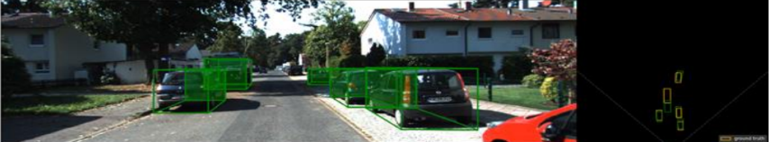
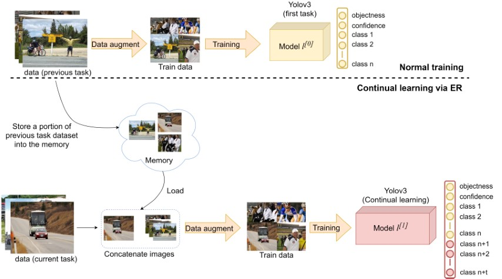
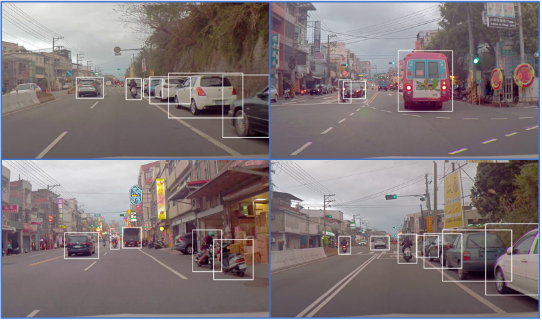
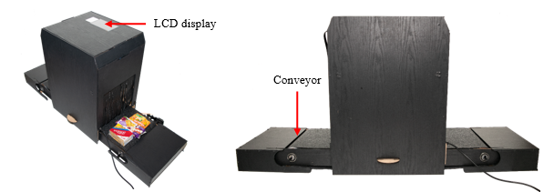
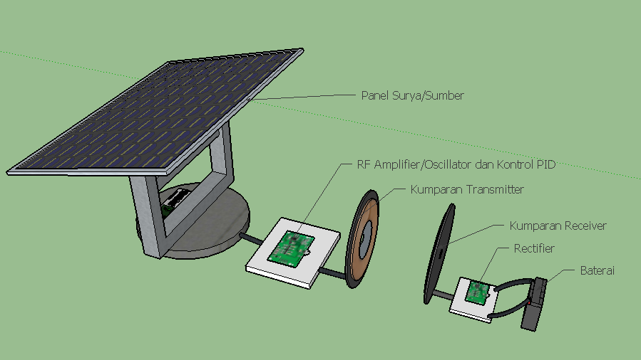

|
Muhamad Amirul HaqNTUST Contactamirul.haq@outlook.co.id Research InterestsPh.D. Student at NTUST, Taiwan. I'm interested in computer vision, deep learning, and embedded system. |
|
|
Muhamad Amirul HaqNTUST Contactamirul.haq@outlook.co.id Research InterestsPh.D. Student at NTUST, Taiwan. I'm interested in computer vision, deep learning, and embedded system. |
|  | 3D Object Detection Based on Proposal Generation Network Utilizing Monocular Images Qazi Mazhar ul Haq, Muhamad Amirul Haq, Shanq-Jang Ruan, Pei-Jung Liang, and De-Qin Gao IEEE Consumer Electronic Magazine (CEMAG), 2021 Abstract / Bibtex |
|  | Continual Learning Strategy in One-Stage Object Detection Framework Based on Experience Replay for Autonomous Driving Vehicle Jeng-Lun Shieh, Qazi Mazhar ul Haq, Muhamad Amirul Haq, Said Karam, Peter Chondro, De-Qin Gao, and Shanq-Jang Ruan MDPI Sensors, 2020 Paper / Bibtex |
|  |
Edge-Based Multi-Class Object Proposal for On-Road Object Detection Muhamad Amirul Haq, Mei-En Shao, Pei-Jung Liang, De-Qin Gao, and Shanq-Jang Ruan 31st VLSI Design / CAD Symposium, Taiwan, 2020 Conference / Bibtex |
|  |
Automatic Self-checkout System Using SURF, Brute Force Matcher, and RFID for Payment Process Optimization at Supermarket Jeff L Gaol, Muhamad Amirul Haq, Sigit Armiyanto, Hendra Kusuma, and Tasripan IPTEK Journal of Proceedings Series, 2019 Abstract / Bibtex |
|  |
Rancang Bangun Sistem Pengisian Baterai Nirkabel Menggunakan Mikrokontroler Teensy Muhamad Amirul Haq, Muhammad Rivai, and Tasripan Jurnal Teknik ITS 7, 2018 |